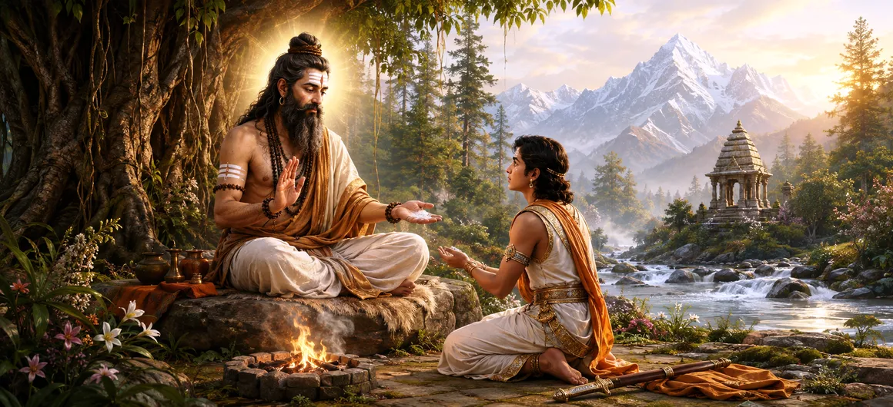

The Story of Rishabha
Chapter 4 of the Shatarudra Samhita presents the sacred story of Rishabha, a divine manifestation of Lord Shiva associated with spiritual discipline, renunciation, instruction, and protection. The chapter places this incarnation within the cyclical framework of the Dvapara Yugas and describes the divine purpose behind Shiva's appearance as Rishabha.
The tradition identifies the relevant Dvapara as the ninth Dvapara, when Saraswata is associated with the role of Vyasa. Rishabha appears with a specific spiritual mission and is accompanied by four disciples named Parashara, Garga, Bhargava, and Girisha.
The chapter also connects Rishabha's manifestation with the path of Nivritti, the inward movement away from worldly attachment toward spiritual realization. The account of Bhadrayu further shows how divine knowledge can guide a ruler toward righteous responsibility and purposeful action.
Chapter 4 Highlights
Rishabha Incarnation
Explores the manifestation of Lord Shiva as Rishabha and the spiritual purpose behind this divine appearance.
Ninth Dvapara
Places the Rishabha incarnation within the ninth Dvapara Yuga and the cycle of divine manifestations.
Saraswata as Vyasa
Connects Rishabha's appearance with the period when Saraswata is associated with the role of Vyasa.
Four Disciples
Names Parashara, Garga, Bhargava, and Girisha as the four disciples connected with Rishabha.
Path of Nivritti
Emphasizes spiritual withdrawal, detachment, inward discipline, and the pursuit of higher realization.
Bhadrayu's Guidance
Shows Rishabha guiding Bhadrayu through knowledge, kingship, courage, and divine blessing.
Core Topics in This Chapter
- 01 The Setting of the Rishabha Incarnation →
- 02 The Ninth Dvapara Yuga →
- 03 Saraswata and the Role of Vyasa →
- 04 The Purpose of Rishabha's Manifestation →
- 05 The Four Disciples of Rishabha →
- 06 The Path of Nivritti →
- 07 Rishabha and Bhadrayu →
- 08 The Teaching of Kingship and Duty →
- 09 Divine Strength and Blessing →
- 10 Transition to the Nineteen Incarnations →
The Setting of the Rishabha Incarnation
The fourth chapter of the Shatarudra Samhita turns from the earlier manifestations of Shiva toward the sacred account of Rishabha. The chapter presents this manifestation within the recurring cycles of cosmic time, where Shiva assumes different forms for particular spiritual purposes.
Rishabha is presented not merely as a symbolic figure, but as a divine manifestation carrying a distinct teaching mission. His appearance is associated with spiritual withdrawal, discipline, and the preservation of a path leading away from excessive attachment to worldly existence.
The story therefore combines cosmic chronology with spiritual instruction. The incarnation becomes a bridge between divine manifestation and the practical question of how human beings should direct their lives toward higher truth.
The Ninth Dvapara Yuga
The chapter associates the Rishabha incarnation with the ninth Dvapara Yuga. The Purāṇic account places divine manifestations within recurring cycles rather than treating them as isolated events outside the structure of cosmic time.
In this particular cycle, the appearance of Rishabha is connected with the spiritual work required during that age. His manifestation therefore belongs to a larger pattern in which Shiva repeatedly appears to preserve knowledge and establish a suitable spiritual path.
The chapter's use of cosmic chronology also reminds the reader that divine teaching is not confined to a single historical moment. Spiritual wisdom is renewed whenever the cosmic order requires its re-expression.
Saraswata and the Role of Vyasa
The Rishabha account identifies Saraswata as the Vyasa associated with the ninth Dvapara Yuga. The name of Vyasa represents the preservation, arrangement, and transmission of sacred knowledge through the changing cycles of time.
The connection between Saraswata and Rishabha is significant because the chapter places spiritual teaching and the preservation of sacred knowledge within the same cosmic framework.
Through this relationship, the chapter presents divine incarnation and sacred transmission as complementary forces. One establishes the spiritual teaching, while the other preserves and carries knowledge through the ages.
The Purpose of Rishabha's Manifestation
Rishabha's manifestation is especially connected with the teaching of the Nivritti path. Nivritti represents an inward movement, in which the seeker gradually loosens the hold of worldly attachment and turns the mind toward spiritual knowledge.
The teaching does not simply reject responsibility. Rather, it points toward freedom from attachment and the recognition that worldly duties should be performed with understanding, discipline, and awareness of a higher spiritual purpose.
Rishabha therefore represents a form of divine instruction in which renunciation becomes an inner discipline. The deeper lesson is to master attachment rather than merely abandon external life.
The Four Disciples of Rishabha
The chapter names four disciples associated with Rishabha: Parashara, Garga, Bhargava, and Girisha. Their presence shows that divine knowledge is transmitted through a teacher-disciple relationship.
The disciples represent the continuation of the teaching beyond the immediate appearance of the divine incarnation. Through disciples, spiritual knowledge becomes part of a living tradition capable of reaching future generations.
The four names therefore have significance beyond their individual identities. They form part of the sacred chain through which Rishabha's spiritual purpose is preserved and communicated.
The Path of Nivritti
Nivritti is one of the central spiritual ideas connected with the Rishabha incarnation. It describes the inward turning of consciousness and the gradual release of the mind from dependence upon temporary worldly objects.
The path calls for discrimination, self-control, detachment, and a sincere search for spiritual truth. Renunciation in this sense is not merely an external change of clothing, residence, or social position.
Rishabha's teaching points toward the deeper renunciation of egoistic attachment. The seeker learns to perform necessary actions without allowing desire, pride, or possessiveness to become the foundation of life.
Rishabha and Bhadrayu
The story of Bhadrayu adds another dimension to the Rishabha incarnation. Here the divine teacher is not concerned only with renunciation but also with guiding a person who must live within the responsibilities of kingship.
Rishabha guides Bhadrayu and imparts knowledge connected with kingship. This episode demonstrates that spiritual wisdom can operate within worldly responsibility when power is guided by righteousness and discipline.
Bhadrayu's relationship with Rishabha therefore becomes an example of divine guidance taking different forms according to the needs of the seeker. One person may require renunciation, while another may require wisdom to perform worldly duties correctly.
The Teaching of Kingship and Duty
The guidance given to Bhadrayu emphasizes that authority should be joined with responsibility. A ruler's strength has meaning only when it is used to protect order, uphold justice, and serve the legitimate needs of those under his care.
Rishabha's teaching also suggests that spiritual understanding does not require every person to abandon social responsibility. Instead, each individual must discover how to perform the duties of life without becoming enslaved by attachment.
In this way, the story brings together two apparently different ideals: the inward discipline of Nivritti and the outward responsibility of righteous leadership.
Divine Strength and Blessing
The account of Bhadrayu also highlights the role of divine blessing in fulfilling one's responsibility. Rishabha provides guidance and strength so that Bhadrayu can face the challenges associated with his position.
The story connects spiritual blessing with purposeful action. Divine grace does not eliminate the need for effort; instead, it strengthens the seeker so that effort can be directed toward a righteous goal.
Bhadrayu's episode therefore complements the broader message of the chapter: spiritual life involves both inner mastery and responsible action.
Transition to the Nineteen Incarnations
The story of Rishabha forms part of the wider account of Shiva's many manifestations. By presenting one incarnation in depth, the chapter demonstrates how each appearance can carry a distinct spiritual purpose.
Rishabha combines the ideals of renunciation, instruction, protection, righteous leadership, and divine grace. These themes prepare the reader to understand the wider diversity of Shiva's incarnations.
The next chapter continues this expanding vision by turning from the individual story of Rishabha toward the broader presentation of the nineteen incarnations of Lord Shiva.
Key Teachings of Chapter 4
Inner Renunciation
True renunciation begins with freedom from attachment and mastery over the mind.
Guru and Disciple
Sacred knowledge continues through disciplined transmission from teacher to disciple.
Duty with Wisdom
Spiritual wisdom teaches a person to fulfill responsibility without becoming trapped by attachment.
Righteous Leadership
Authority becomes meaningful when it protects order and serves a righteous purpose.
Detachment
The path of Nivritti encourages the seeker to move inward and loosen dependence on temporary things.
Divine Guidance
Shiva's grace appears as guidance suited to the spiritual and worldly responsibilities of each seeker.
Spiritual Reflection
The story of Rishabha invites us to think deeply about the meaning of renunciation. Spiritual freedom does not necessarily require a person to escape every responsibility. Instead, it begins when the mind becomes free from possessiveness, pride, and excessive attachment. Rishabha's connection with the path of Nivritti teaches the value of turning inward and seeking a higher truth. His guidance to Bhadrayu adds another important lesson: worldly responsibility and spiritual wisdom do not have to oppose each other. A ruler can act with strength while remaining guided by righteousness, just as a seeker can live in the world while gradually becoming free from its attachments. The chapter therefore presents Shiva's grace as both liberation from bondage and wisdom for responsible action.
Living the Message of Chapter 4
Applying the teaching of Rishabha in daily life begins with examining attachment. Before reacting to loss, praise, criticism, success, or failure, pause and ask whether the mind is responding from wisdom or from possessiveness and fear.
The teaching of Nivritti can be practiced through simplicity, self-control, regular spiritual reflection, and the conscious reduction of unnecessary desires. Renunciation can begin internally even while ordinary duties continue.
The example of Bhadrayu also encourages responsible use of strength and authority. Whatever position a person holds, power should be directed toward protection, fairness, service, and the welfare of others.
Key Spiritual Concepts
The divine manifestation of Lord Shiva described in Chapter 4, associated with spiritual instruction and the path of Nivritti.
The inward path of withdrawal, detachment, spiritual discipline, and movement toward higher realization.
The Vyasa associated with the ninth Dvapara Yuga in the account of Rishabha.
One of the four disciples associated with Rishabha's divine teaching.
One of the four disciples named in connection with the Rishabha incarnation.
One of Rishabha's four disciples who belongs to the sacred chain of transmission.
One of the four disciples connected with Rishabha in the chapter's account.
The prince guided by Rishabha through instruction in kingship and divine strength.
Chapter Summary
Shatarudra Samhita Chapter 4 presents the sacred story of Lord Shiva's Rishabha incarnation. The manifestation is associated with the ninth Dvapara Yuga, when Saraswata is connected with the role of Vyasa. Rishabha appears with the purpose of establishing and teaching the path of Nivritti, emphasizing inward discipline, detachment, and spiritual realization. Four disciples, Parashara, Garga, Bhargava, and Girisha, are associated with his teaching and represent the continuation of sacred knowledge through the teacher-disciple tradition. The chapter also tells of Rishabha's guidance of Bhadrayu, showing how divine wisdom can guide a person in the responsibilities of kingship. Through the combined themes of renunciation and righteous action, the chapter presents a balanced vision of spiritual life. It concludes by preparing the reader for the broader account of Shiva's nineteen incarnations.
Frequently Asked Questions
① What is the main subject of Shatarudra Samhita Chapter 4?
The chapter presents the story of Lord Shiva's Rishabha incarnation, his spiritual purpose, his disciples, the path of Nivritti, and the story of Bhadrayu.
② When does Shiva manifest as Rishabha?
The Rishabha incarnation is associated with the ninth Dvapara Yuga, when Saraswata is identified with the role of Vyasa.
③ Who are the four disciples of Rishabha?
The four disciples named in the account are Parashara, Garga, Bhargava, and Girisha.
④ What is the purpose of the Rishabha incarnation?
Rishabha is associated with teaching the path of Nivritti, encouraging inward discipline, detachment, spiritual knowledge, and movement toward liberation.
⑤ Who was Bhadrayu in the story of Rishabha?
Bhadrayu was a prince whom Rishabha guided through knowledge of kingship, divine strength, and responsible action.
⑥ How does Chapter 4 connect to Chapter 5?
Chapter 4 focuses on the individual story and spiritual purpose of Rishabha, while Chapter 5 expands the discussion to the nineteen incarnations of Lord Shiva.
“True renunciation is not merely leaving the world behind; it is learning to live without becoming bound by attachment, while allowing wisdom and righteousness to guide every action.”
Continue Through Shatarudra Samhita
Chapter 4 presents the sacred story of Rishabha, his spiritual mission, his disciples, and his guidance to Bhadrayu. Continue to Chapter 5 to explore the nineteen incarnations of Lord Shiva.